인터넷정보관리사-2급 (2017-09-09 기출문제)
1과목: 인터넷의 이해
1. 다음 중 우리나라 국가 5대 기간전산망으로 가장 거리가 먼 것은?
- 행정전산망
- 경찰전산망
- 금융전산망
- 공안전산망
(정답률: 60%)

2. 다음 중 도메인 구조에 대한 설명으로 가장 거리가 먼 것은?
- 역트리 구조에 의해 계층적으로 구성되어 있다.
- 도메인이름은사용자가자유롭게설정할수있다.
- 차상위 도메인에는 기관의 성격을 표현하고 있다.
- 인터넷 서비스에는 도메인 검색 서비스가 있다.
(정답률: 54%)
3. 다음 중 도메인 네임 선정 원칙으로 가장 거리가 먼 것은?
- 영문 대·소문자 구별이 없다.
- 도메인 네임은 반드시 영어로 시작하여야 한다.
- 길이는 최대 63자까지 가능하다.
- 특수문자 중 하이픈(-)으로 끝날 수 없다.
(정답률: 74%)
4. 다음 중 인터넷 기술 발전을 시간 순으로 나열한 것은?
- TCP/IP→WWW→DNS→ARPANET
- ARPANET→WWW→TCP/IP→DNS
- WWW→ARPANET→TCP/IP→DNS
- ARPANET→TCP/IP→DNS→WWW
(정답률: 77%)
5. 다음 중 IPv6에 대한 설명으로 가장 거리가 먼 것은?
- 128비트 주소체계를 가지고 있다.
- 16비트씩 8자리로 구성되어 있다.
- 4가지의 주소유형을 가지고 있다.
- IPv4와 함께 동작할 수 있다.
(정답률: 53%)
6. 다음 중 인터넷 주소체계에 대한 설명으로 가장 거리가 먼 것은?
- IPv6는 IPv4에서 헤더 포맷을 단순화하였다.
- ARP는 논리적 IP주소를 물리적인 주소와 맞추기 위한 프로토콜이다.
- 네임 서버(name Server)는 사용자의 요청에 응답하여 분해자(resolver)로부터 정보를 추출 한다.
- IP주소에서 Network ID는 해당 컴퓨터가 소속된 네트워크에 배정된 이름이다.
(정답률: 51%)
7. 다음 OSI 7계층 중, 하위계층부터 상위계층 순으로 나열된 것은?
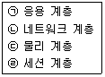
- ㉡-㉣-㉠-㉢
- ㉢-㉡-㉠-㉣
- ㉡-㉢-㉠-㉣
- ㉢-㉡-㉣-㉠
(정답률: 66%)
8. 다음 설명에 해당하는 클라우드 컴퓨팅 서비스 유형은?
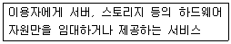
- CaaS
- SaaS
- IaaS
- PaaS
(정답률: 58%)
9. 다음 중 클라우드 컴퓨팅의 장점으로 가장 거리가 먼 것은?
- 서버 해킹으로 인한 개인정보의 유출을 막을 수 있다.
- 사용되는 데이터가 클라우드 서버에 저장되므로 백업이 필요 없다.
- 서버에 저장된 문서를 동시에 협업하여 업무 효율 증대를 이룰 수 있다.
- OA용 소프트웨어 구입이나 웹서버 구축이 필요하지 않아 비용이 저렴하다.
(정답률: 61%)
10. 다음 중 전자우편 보안 관련 프로토콜로 가장 거리가 먼 것은?
- PGP(Pretty Good Privacy)
- PEM(Privacy Enhanced mail)
- IMAP(Inter Message Access Protocol)
- S/MIME(Security/Multipurpose Internet Mail Extensions)
(정답률: 53%)
11. 다음 중 소셜 미디어의 주요 특징과 가장 거리가 먼 것은?
- 콘텐츠의 독점
- 콘텐츠의 개인화
- 개방형 플랫폼
- 콘텐츠의 공유
(정답률: 73%)
12. 다음에서 설명하는 기술을 의미하는 용어는?
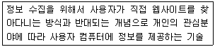
- 푸시
- 트리거
- 데이터마이닝
- 링크 인기도
(정답률: 56%)
13. 다음 설명에 해당하는 소셜 미디어는?
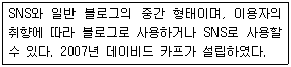
- 페이스북
- 텀블러
- 인스타그램
- 위키피디아
(정답률: 68%)
14. 다음 중 소셜 미디어의 사용목적에 대한 설명으로 가장 거리가 먼 것은?
- 뉴스에 자신의 의견을 덧붙여 대화나 토론을 시도하기 위한 목적
- 타인의 의견을 감시하기 위한 목적
- 새로운 대중에게 새로운 뉴스를 전달하기 위한 목적
- 여러 의견을 온라인 공간에 저장하고 보존하기 위한 목적
(정답률: 73%)
15. 다음은 무엇의 특징을 설명하는 것인가?
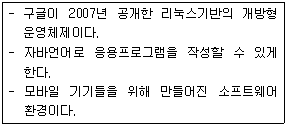
- Android
- iOS
- bada
- Symbian
(정답률: 77%)
16. 다음 중 IRC(Internet Relay Chatting) 명령어와 그에 해당하는 설명이 잘못 짝지어진 것은?
- /part : 현재 채널에서 퇴장
- /away : 자리를비울경우, 부재중메시지를표시
- /nick : 현재 채널에 있는 접속자의 정보 확인
- /query : 접속자간 1:1 채팅
(정답률: 49%)
17. 다음 중 전자우편의 헤더 구성 요소와 그에 대한 설명이 잘못 짝지어진 것은?
- Date : 메시지가 보내진 날짜와 시간 표시
- To : 메시지를 받는 이의 전자우편 주소 표시
- Cc : 참조하는 사람의 전자우편 주소 표시
- X-mailer : 전자우편이 목적지에 도착하기까지 경유된 내역 표시
(정답률: 56%)
18. 다음에서 설명하는 개인정보의 유형은 어떤 종류인가?
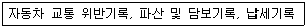
- 법적정보
- 신용정보
- 소득정보
- 일반정보
(정답률: 56%)
19. 다음 내용에 해당하는 용어는?
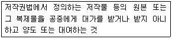
- 배포
- 발행
- 공표
- 편집
(정답률: 73%)
20. 전자서명법의 용어 정의 중, 다음 괄호에 가장 적합한 용어는?
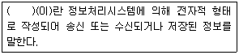
- 인증서
- 전자서명생성정보
- 전자문서
- 공인전자서명
(정답률: 64%)
21. 다음 중 전자서명법에서 공인인증서의 발급에 포함되는 사항이 아닌 것은?
- 공인인증서의 일련번호
- 공인인증서의 유효기간
- 공인인증서의 이용목적
- 공인인증서임을 나타내는 표시
(정답률: 67%)
22. 개인정보보호법 중, 다음을 위반하였을 경우 받게 되는 벌칙은?
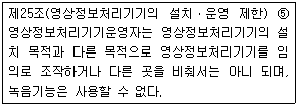
- 5천만원 이하의 과태료
- 5년 이하의 징역 또는 5천만원 이하의 벌금
- 3년 이하의 징역 또는 3천만원 이하의 벌금
- 2년 이하의 징역 또는 2천만원 이하의 벌금
(정답률: 48%)
23. 저작권법의 보호기간에 대한 설명으로 잘못된 것은?
- 저작재산권은 보호기간의 원칙에 따라 저작권자가 생존하는 동안의 70년간 존속된다.
- 업무상 저작물의 저작재산권은 창작한때부터 50년 이내에 공표되지 아니한 경우 창작한때부터 70년간 존속한다.
- 저작인접권은 방송의 경우 50년간 존속한다.
- DB제작자의 권리는 DB의 제작을 완료한 때부터 발생하며, 그 다음해부터 기산하여 5년간 존속한다.
(정답률: 63%)
24. 컴퓨터의 구성 요소 중 보조기억장치에 해당하지 않는 것은?
- USB
- HDD
- SSD
- ROM
(정답률: 62%)
25. 다음 중 프레젠테이션을 위한 응용프로그램의 확장자로 가장 적합한 것은?
- mp3
- hwp
- cpp
- pptx
(정답률: 74%)
26. 다음 중 전용회선의 종류와 최대 전송 속도가 잘못 짝지어진 것은?
- T1 : 1.544Mbps
- E1 : 2.048Mbps
- T2 : 6.312Mbps
- T3 : 34.368Mbps
(정답률: 50%)
27. 다음 중 두 개의 LAN 시스템을 연결하는 데 사용되는 고속의 스위칭 장비는?
- 브리지
- 리피터
- 게이트웨이
- 허브
(정답률: 49%)
28. 다음 중 Well-Known 포트번호와 그에 대한 설명이 잘못 짝지어진 것은?
- 21 : FTP
- 25 : SMTP
- 80 : HTTP
- 100 : POP3
(정답률: 70%)
29. 다음 중 그래픽 기반의 HTML 저작도구와 가장 거리가 먼 것은?
- 나모 웹 에디터
- 드림위버
- 핫도그
- 플래시
(정답률: 61%)
30. 다음 중 HTML의 특징과 가장 거리가 먼 것은?
- 속성과 속성의 구분은 공백으로 구분한다.
- 모든 태그는 시작 태그와 끝 태그의 쌍으로 구성된다.
- 확장자로 html, htm을 사용한다.
- 공백이나 몇 가지 기호들은 특수기호를 사용해야 한다.
(정답률: 55%)
31. 다음 설명에 해당하는 용어는?
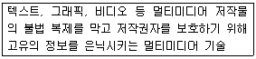
- 디지털 워터마킹
- 미디어 리터러시
- 안티 앨리어싱
- 오버프린트
(정답률: 72%)
32. 다음 중 운영체제의 운영기법과 그에 대한 설명이 잘못 짝지어진 것은?
- 실시간처리 – 데이터가 발생한 시점에 계산 처리를 즉석에서 처리하여 그 결과를 되돌려 보내는 방식이다.
- 다중처리 – 2개 이상의 프로그램을 주기억장치에 기억시키고, CPU를 번갈아 사용하면서 처리하는 방식이다.
- 분산처리 – 네트워크로 상호 접속된 복수의 컴퓨터시스템 사이에 처리, 기억 등을 분산 하여 처리하는 방식이다.
- 시분할처리 – 하나의 CPU를 여러 개의 작업들이 일정시간을 간격을 두고 사용함으로써 CPU를 공유하는 방식이다.
(정답률: 54%)
33. 다음 중 URL의 구조에 대한 설명으로 가장 거리가 먼 것은?
- 브라우저의 주소란에 프로토콜을 생략하고 사용해도 접속 가능하다.
- 포트번호를 생략하면 잘 알려진 포트번호로 접속한다.
- 접속을 위해서는 반드시 호스트명과 도메인명으로 접속해야 한다.
- 프로토콜, 호스트 주소, 디렉터리로 구성되어 있다.
(정답률: 54%)
2과목: 인터넷 자원 탐색
34. 웹 브라우저에서 지원하는 마크업 언어만을 다음에서 모두 고른 것은?
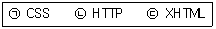
- ㉠
- ㉠, ㉢
- ㉡, ㉢
- ㉠, ㉡, ㉢
(정답률: 38%)
35. 다음 괄호 안에 들어갈 웹브라우저의 서비스는?
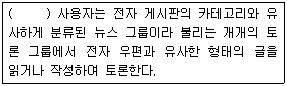
- WWW
- Gopher
- Usenet
(정답률: 65%)
36. 다음 중 파이어폭스(firefox) 브라우저에 대한 설명을 모두 고른 것은?
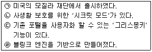
- ㉠, ㉡
- ㉠, ㉢
- ㉡, ㉣
- ㉢, ㉣
(정답률: 42%)
37. 다음에서 설명하는 인터넷 익스플로러의 기능은?
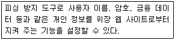
- 인코딩
- Siverlight
- SmartScreen 필터
- 웹 조각
(정답률: 65%)
38. 다음 중 인터넷 익스플로러에서 InPrivate 브라우징 기능을 실행하기 위해 선택하는 메뉴는?
- 안전(S)
- 소스(C)
- 파일(F)
- 추가 기능 관리(M)
(정답률: 48%)
39. 다음 중 익스플로러에서 '웹 페이지 보관 파일' 형식으로 저장하였을 경우의 파일 확장자는?
- htm
- mht
- txt
- html
(정답률: 51%)
40. 다음 중 인터넷 익스플로러 11에서 현재 웹 페이지의 HTML, CSS 코드를 확인할 수 있는 메뉴는?
- 추가 기능 관리
- F12 개발자 도구
- 성능 대시보드
- 도구 모음
(정답률: 60%)
41. 다음에서 설명하는 인터넷 익스플로러의 보안 수준은?
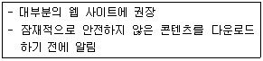
- 높음
- 보통
- 약간 낮음
- 약간 높음
(정답률: 58%)
42. 다음 중 인터넷 익스플로러의 '기본 설정 복원'의 초기화에 자동으로 포함되는 항목만을 모두 고른 것은?
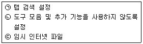
- ㉠
- ㉠, ㉡
- ㉡, ㉢
- ㉠, ㉡, ㉢
(정답률: 47%)
43. 구글 크롬 브라우저에서 최근에 닫은 탭을 열고자 할 때 사용할 수 있는 단축키는?
- Ctrl + T
- Ctrl + Q
- Ctrl + Shift + N
- Ctrl + Shift + T
(정답률: 57%)
44. 다음 중 구글 크롬 브라우저에서 저장된 비밀번호를 확인하기 위한 메뉴는?
- 사용자
- 비밀번호 관리
- 자동완성 설정
- 북마크 및 설정 가져오기
(정답률: 67%)
45. 다음 설명에 해당하는 파이어폭스 브라우저의 기능은?
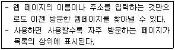
- IE-Tab
- Adblock
- Awesome Bar
- Web Developer
(정답률: 53%)
46. 다음에서 검색엔진의 구성 요소를 모두 고른 것은?
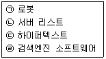
- ㉠, ㉡
- ㉠, ㉣
- ㉡, ㉢
- ㉢, ㉣
(정답률: 65%)
47. 다음 중 로봇의 주기적인 방문 대상을 모두 고른 것은?
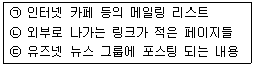
- ㉠
- ㉠, ㉢
- ㉡, ㉢
- ㉠, ㉡, ㉢
(정답률: 47%)
48. 다음 중 검색엔진 소프트웨어에 대한 설명으로 알맞은 것은?
- 신규사이트를 체크한다.
- 데이터베이스를 구축한다.
- 색인어를 활용하여 정보를 구조화한다.
- 사용자 요구에 적합한 정보를 검색한다.
(정답률: 48%)
49. 다음 설명에 해당하는 용어는?
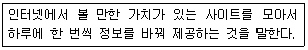
- Hot Site
- Cold Site
- Cool Site
- Warm Site
(정답률: 56%)
50. 다음 중 로봇 배제 표준 도입에 따른 장점으로 알맞은 것은?
- 웹 서버의 부팅 속도를 향상시킨다.
- 웹 클라이언트의 부담을 감소시킨다.
- 검색 로봇의 바이러스 감염을 방지한다.
- 검색 엔진 로봇으로부터 피해를 최소화한다.
(정답률: 38%)
51. 다음 중 Robots.txt의 내용에 대한 설명으로 옳은 것을 모두 고른 것은?
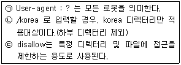
- ㉢
- ㉠, ㉡
- ㉡, ㉢
- ㉠, ㉡, ㉢
(정답률: 35%)
52. 검색엔진 구축 방식 중, 에이전트 인덱스 방식에 대한 설명으로 옳은 것은?
- 데이터베이스의 갱신 속도가 매뉴얼 인덱스 방식에 비해 매우 느리다.
- 웹 사이트를 구축한 곳의 관리자가 특정 검색엔진에 접속하여 자신의 홈페이지를 직접 수작업으로 등록시키는 방식이다.
- 매뉴얼 인덱스 방식에 비해 상대적으로 정보의 양은 많은 편이다.
- 무작위로 웹에 있는 정보를 수집하기 때문에 매뉴얼 인덱스 방식보다 정보의 질이 높다.
(정답률: 50%)
53. 다음 사례에서 A씨가 활용하는 검색엔진으로 알맞은 것은?
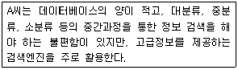
- 메타 검색엔진
- 로봇 검색엔진
- 주제별 검색엔진
- 하이브리드 검색엔진
(정답률: 48%)
54. 다음 중 메타 검색엔진에 해당하는 것을 모두 고른 것은?
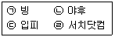
- ㉠, ㉡
- ㉠, ㉣
- ㉡, ㉢
- ㉢, ㉣
(정답률: 34%)
55. 다음 표는 검색 결과를 나타낸 것이다. ㉠과 ㉡에 들어갈 숫자가 알맞게 짝지어진 것은?
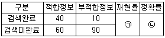
- ㉠ : 10%, ㉡ : 80%
- ㉠ : 40%, ㉡ : 10%
- ㉠ : 40%, ㉡ : 80%
- ㉠ : 80%, ㉡ : 40%
(정답률: 53%)
56. 다음 중 조회율과 정도율에 대한 설명으로 알맞은 것은?
- 조회율과 정도율 둘 다 낮아야 좋다.
- 조회율과 정도율 둘 다 높아야 좋다.
- 조회율의 수치는 낮고, 정도율의 수치는 높아야 좋다.
- 조회율의 수치는 높고, 정도율의 수치는 낮아야 좋다.
(정답률: 54%)
57. 다음 설명에 해당하는 네이버의 서비스는?
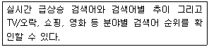
- V live
- 파파고
- 데이터랩
- 그라폴리오
(정답률: 57%)
58. 네이버 국어사전에 '살갑다'라고 검색을 한 결과, 다음과 같은 결과가 나왔다. 이에 해당하는 정보검색 관련 용어는?
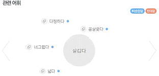
- 불용어
- 개비지
- 시소러스
- 리키지
(정답률: 65%)
59. 다음 중 인접 연산자에 해당하는 것은?
- OR
- AND
- NOT
- NEAR
(정답률: 66%)
60. 정보검색의 단계별 발전모델 중 '의미 검색' 단계에 해당하는 것은?
- 정보의 유용성 강조
- 대화기반 지능적 처리
- 정확도보다 재현 중심
- 사용자의 의도와 정보요구 분석
(정답률: 54%)
61. 정보검색에서 사용되는 언어가 가지는 특성만을 다음에서 모두 고른 것은?
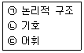
- ㉠
- ㉠, ㉢
- ㉡, ㉢
- ㉠, ㉡, ㉢
(정답률: 55%)
62. 다음 트위터의 여러 검색연산자와 그에 대한 설명이 잘못 짝지어진 것은?
- from:twitter_kr : “twitter_kr” 사용자가 작성
- 검색-고급 : “고급”은 포함하나, “검색”은 포함하지 않음
- @doremi : “doremi” 사용자를 언급
- 한정 OR 판매 : “한정” 또는 “판매” 중 한 단어를 포함
(정답률: 59%)
63. 다음 정보원의 종류 중, 2차 정보에 해당하는 것을 모두 고른 것은?
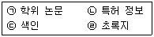
- ㉠, ㉡
- ㉠, ㉢
- ㉡, ㉣
- ㉢, ㉣
(정답률: 53%)
64. 다음 사례와 관련 있는 정보 검색 용어는?
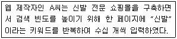
- 개비지
- 스패밍
- 시소러스
- 자연어 검색
(정답률: 64%)
65. 정보의 발생빈도에 따른 유형을 다음에서 모두 고른 것은?
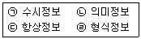
- ㉠, ㉡
- ㉠, ㉢
- ㉡, ㉣
- ㉢, ㉣
(정답률: 55%)
66. 다음 설명에 해당하는 인터넷 정보원은?
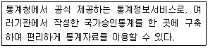
- KINDS
- KREN
- KOSIS
- DBpia
(정답률: 54%)
3과목: 인터넷 윤리
67. 다음은 인터넷 윤리의 기능 중 어떠한 것에 해당되는가?
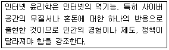
- 종합윤리
- 세계윤리
- 책임윤리
- 변혁윤리
(정답률: 61%)
68. 인터넷 윤리의 필요성과 가장 거리가 먼 것은?
- 인터넷이삶에미치는영향력이계속강화되고있다.
- 인터넷의실체와영향력에대한이해가요구되고있다.
- 각종 정보통신기술의 부작용이 심각해지고 있다.
- 인터넷 범죄에 노출될 확률이 줄어들고 있다.
(정답률: 66%)
69. 버지니아 셰어의 네티켓의 핵심 원칙과 가장 거리가 먼 것은?
- 인간임을 기억하라.
- 현재 자신이 어떤 곳에 접속해 있는지 알고, 그곳 문화에 어울리게 행동하라.
- 온라인상의 자신을 근사하게 만들어라.
- 논쟁은 절제된 감정보다는 있는 그대로 드러내는 것이 좋다.
(정답률: 60%)
70. 다음 중 게임 네티켓으로 가장 거리가 먼 것은?
- 게이머도 스포츠맨임을 인식하고 예의를 갖추어야 한다.
- 게임에 이겼을 때에는 상대를 위로하고 졌을 때에는 깨끗하게 물러서야 한다.
- 상대방을 존중하는 것을 잊어서는 안 된다.
- 게임 중에 일방적으로 퇴장해도 된다.
(정답률: 73%)
71. 다음에서 설명에 해당되는 사이버 범죄의 유형은?
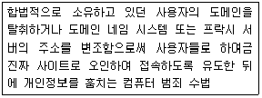
- 피싱
- 파밍
- 스미싱
- 메모리 해킹
(정답률: 50%)
72. 다음 설명에 해당하는 사이버 범죄의 특성은?
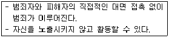
- 비대면성과 익명성
- 전문성과 기술성
- 국제성과 광역성
- 빠른 전파성과 천문학적 피해
(정답률: 75%)
73. 다음 중 OECD 개인정보보호의 8원칙과 가장 거리가 먼 것은?
- 안전보호의 원칙
- 비공개의 원칙
- 개인참가의 원칙
- 책임의 원칙
(정답률: 49%)
74. 다음 중 인터넷 정보 보안의 3원칙으로 가장 거리가 먼 것은?
- 기밀성
- 가변성
- 무결성
- 가용성
(정답률: 55%)
75. 인터넷 중독의 정신과적 원인으로 가장 거리가 먼 것은?
- 우울감
- 강박적 경향
- 산만함과 집중력 저하
- 높은 자존감
(정답률: 70%)
76. 다음 괄호에 들어갈 인터넷 중독 치료과정을 순서대로 나열한 것은?
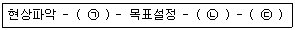
- ㉠-허비한 시간 검토, ㉡-상황파악, ㉢-협조의뢰
- ㉠-허비한 시간 검토, ㉡-협조의뢰, ㉢-상황파악
- ㉠-상황파악, ㉡-허비한 시간 검토, ㉢-협조의뢰
- ㉠-협조의뢰, ㉡-허비한 시간 검토, ㉢-상황파악
(정답률: 51%)
77. 다음 중 인터넷 중독에 이르는 과정과 가장 거리가 먼 것은?
- 현실에서 즐겁게 살고 있다고 느끼게 된다.
- 인터넷에 정기적으로 접속하여 자신의 정체성을 키워간다.
- 인터넷이 거부할 수 없는 대리 만족의 세계가 되어간다.
- 인터넷에 접속하는 것이 모든 걱정에 대한 해독제이며 고통을 잊게 해준다.
(정답률: 64%)
78. 다음 중 인터넷 게임중독의 증상과 가장 거리가 먼 것은?
- 게임의 즉시 반응적 특징과 청소년의 활력적 정서가 부합되어 멈추기 힘들다.
- 게임 안의 공격성과 폭력성이 현실에서도 나타난다.
- 불만스러운 자신의 모습에 대한 대리만족을 느껴 현실생활을 등한시한다.
- 특정한 목적 없이 즉흥적으로 정보를 검색하느라 시간 통제가 안 된다.
(정답률: 58%)
79. 다음 중 K척도의 요소와 가장 거리가 먼 것은?
- 일상생활 장애
- 현실구분 장애
- 긍정적 기대
- 부정적 기대
(정답률: 40%)
80. 다음 중 인터넷 중독을 예방할 수 있는 방법으로 적합하지 않은 것은?
- 컴퓨터 사용시간과 내용을 사용일지에 기록하는 습관을 들인다.
- 컴퓨터 옆에 알람시계를 두어 사용시간을 수시로 확인한다.
- 컴퓨터는 개인 공간 등 비공개된 공간에 설치한다.
- 인터넷 사용 이외에 운동이나 취미활동시간을 늘린다.
(정답률: 68%)